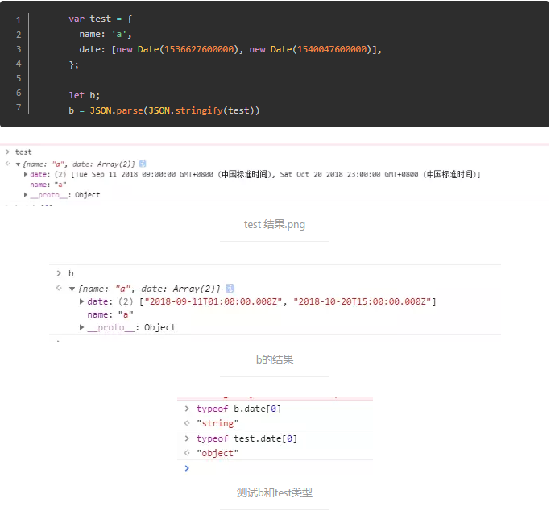
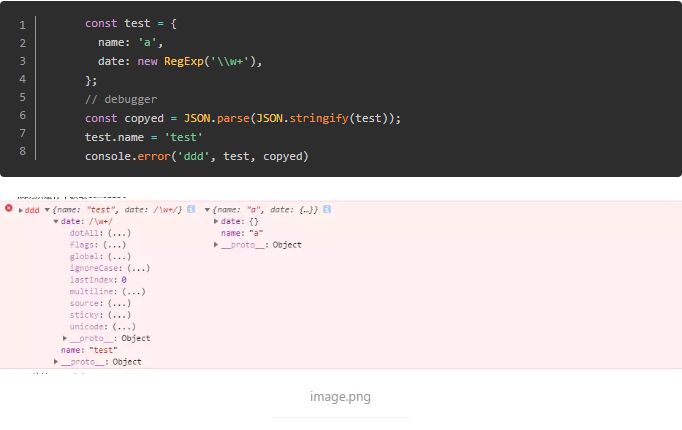
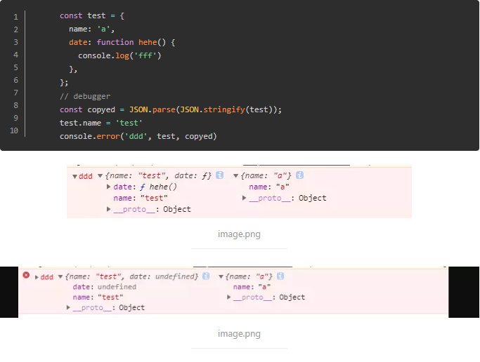
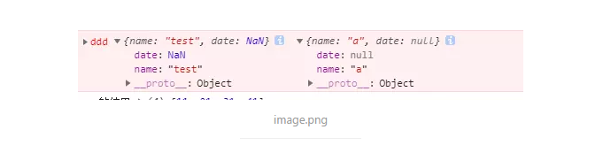
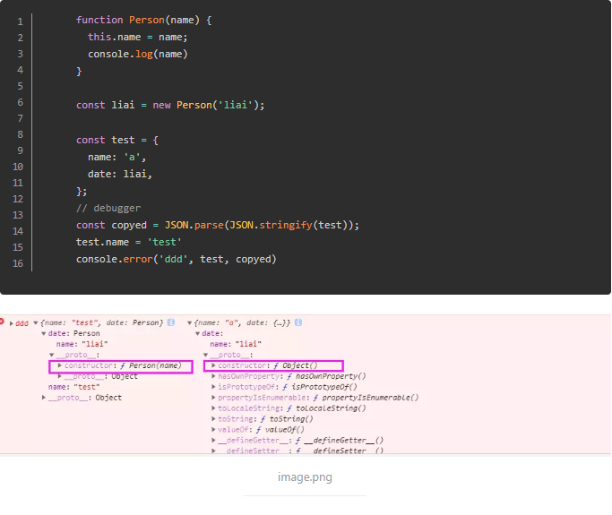

1、如果obj里面有时间对象，则JSON.stringify后再JSON.parse的结果，时间将只是字符串的形式。而不是时间对象；

2、如果obj里有RegExp、Error对象，则序列化的结果将只得到空对象；

3、如果obj里有函数，undefined，则序列化的结果会把函数或 undefined丢失；

4、如果obj里有NaN、Infinity和-Infinity，则序列化的结果会变成null

5、JSON.stringify()只能序列化对象的可枚举的自有属性，例如 如果obj中的对象是有构造函数生成的， 则使用JSON.parse(JSON.stringify(obj))深拷贝后，会丢弃对象的constructor；

6、如果对象中存在循环引用的情况也无法正确实现深拷贝；
以上，如果拷贝的对象不涉及上面讲的情况，可以使用JSON.parse(JSON.stringify(obj))实现深拷贝，但是涉及到上面的情况，可以考虑使用如下方法实现深拷贝：
methods: {
deepClone(data) {
const type = this.judgeType(data);
let obj;
if (type === 'array') {
obj = [];
} else if (type === 'object') {
obj = {};
} else {
// 不再具有下一层次
return data;
}
if (type === 'array') {
// eslint-disable-next-line
for (let i = 0, len = data.length; i < len; i++) {
obj.push(this.deepClone(data[i]));
}
} else if (type === 'object') {
// 对原型上的方法也拷贝了....
// eslint-disable-next-line
for (const key in data) {
obj[key] = this.deepClone(data[key]);
}
}
return obj;
},
judgeType(obj) {
const toString = Object.prototype.toString;
const map = {
'[object Boolean]': 'boolean',
'[object Number]': 'number',
'[object String]': 'string',
'[object Function]': 'function',
'[object Array]': 'array',
'[object Date]': 'date',
'[object RegExp]': 'regExp',
'[object Undefined]': 'undefined',
'[object Null]': 'null',
'[object Object]': 'object',
};
if (obj instanceof Element) {
return 'element';
}
return map[toString.call(obj)];
}
},
mounted() {
this.deepClone([1,2,3,4])
}